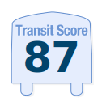
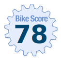
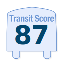
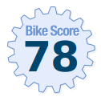

Amazon's HQ2:
Did Raleigh really stand a chance?
By Rachel McKinney
On September, 7th 2017, Amazon announced to the world that they would be opening a second headquarters (HQ2), kicking off a massive competition between municipalities to win over Amazon and the 50,000 high-paying jobs their headquarters would bring (Business Insider). The city of Raleigh managed to make the top 20 list of locations out of the 236 cities vying to become Amazon's newest home. On November 13th 2018, Amazon announced its new HQ2 would be split between Arlington, VA and Long Island City, NYC. So how did Raleigh stack up against these cities? Let's take a look at what Amazon was looking for from municipalities.
Amazon's HQ2 Wish List:
- 30 miles to population centers
- 45 minutes to an international airport
- No more than 1-2 miles from major highways
- Direct access to public transit
- Tax incentives
- Educated labor pool and strong university system
- An overall high quality of life
View Amazon's offical RFP here
Downtown Raleigh, NC
Total Public Transit Routes: 48
Source: HERE Public Transit API
Total Public Transit Stops: 1,383
Source: HERE Public Transit API
Score out of 100. Data from Walk Score.
Long Island City, New York, NY
Total Public Transit Routes: 552
Source: HERE Public Transit API
Total Public Transit Stops: 17,307
Source: HERE Public Transit API
 



Score out of 100. Data from Walk Score
National Landing, Arlington, VA
Total Public Transit Routes: 105
Source: HERE Public Transit API
Total Public Transit Stops: 1,321
Source: HERE Public Transit API
Score out of 100. Data from Walk Score
Summary
Raleigh was certainly a competitive choice for Amazon's HQ2, and it is clear why it was able to make it into the top 20 contenders. Downtown Raleigh offers access to nearby highways, has a nearby international airport, a strong university system and blows Arlington and Long Island City out of the water in terms of affordable housing with housing on average $300 per square foot cheaper. However, one major blow to Raleigh's candidacy is the lack a solid public transport system. Raleigh's Walk Scores are so low, a car would be required for most errands and commutes. Raleigh also offered a much smaller tax incentive package, although it was the biggest incentive package offering in Raleigh's history (News & Observer). There are also other rumored behind-the-scenes factors, such as the fact Amazon CEO, Jeff Bezos, is the owner of the Washington Post, and would want to be close to D.C.
Although Raleigh may not have won over Amazon, no money was spent in the campaign to recruit Amazon, leaving the city with the funds to recruit other tech giants in the future.